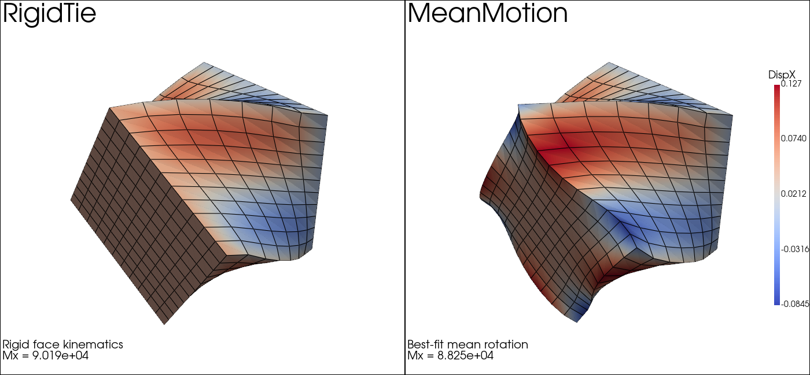

Note
Go to the end to download the full example code.
Mean motion torsion
Compare two ways of imposing a torsion on the right face of a cube:
RigidTieenforces a rigid motion of every node on the right face.MeanMotionprescribes only the best-fit mean rotation of the face, so local warping of the right face remains possible.
import numpy as np
import pyvista as pv
import fedoo as fd
fd.ModelingSpace("3D")
NLGEOM = "UL"
E = 200e3
nu = 0.3
L = 2.0
ANGLE = np.pi / 3 # 0.10
PRINT_INFO = 0
def make_model(label):
mesh = fd.mesh.box_mesh(
nx=8,
ny=12,
nz=12,
x_min=0.0,
x_max=L,
y_min=-1.0,
y_max=1.0,
z_min=-1.0,
z_max=1.0,
elm_type="hex8",
name=f"torsion_{label}_mesh",
)
material = fd.constitutivelaw.ElasticIsotrop(E, nu, name=f"material_{label}")
wf = fd.weakform.StressEquilibrium(material, nlgeom=NLGEOM, name=f"wf_{label}")
assembly = fd.Assembly.create(wf, mesh, "hex8", name=f"assembly_{label}")
pb = fd.problem.NonLinear(assembly, nlgeom=NLGEOM, name=f"problem_{label}")
# pb.set_nr_criterion("Displacement", err0=1, tol=1e-3, max_subiter=20)
return mesh, assembly, pb
def solve_rigid_tie_case():
mesh, assembly, pb = make_model("rigid")
left = mesh.find_nodes("X", mesh.bounding_box.xmin)
right = mesh.find_nodes("X", mesh.bounding_box.xmax)
pb.bc.add(fd.constraint.RigidTie(right))
pb.bc.add("Dirichlet", left, "Disp", 0.0)
pb.bc.add("Dirichlet", "RigidRotX", ANGLE)
pb.nlsolve(dt=0.1, tmax=1.0, update_dt=True, print_info=PRINT_INFO)
moment = pb.get_ext_forces("RigidRotX")[0]
disp = pb.get_dof_solution("Disp")
return pb, assembly, moment
def solve_mean_motion_case():
mesh, assembly, pb = make_model("mean")
left = mesh.find_nodes("X", mesh.bounding_box.xmin)
right = mesh.find_nodes("X", mesh.bounding_box.xmax)
right_surface = fd.mesh.extract_surface(mesh, node_set=right, reduce_order=False)
mean_motion = fd.constraint.MeanMotion(
right_surface,
components=["Rot"],
)
pb.bc.add(mean_motion)
pb.bc.add("Dirichlet", left, "Disp", 0.0)
pb.bc.add("Dirichlet", "MeanRotX", ANGLE)
# pb.bc.add("Dirichlet", ["MeanDispX", "MeanDispY", "MeanDispZ"], [0.4, -1, 0])
pb.nlsolve(dt=0.1, tmax=1.0, update_dt=True, print_info=PRINT_INFO)
moment = pb.get_ext_forces("MeanRotX")[mean_motion.node_by_variable["MeanRotX"]]
disp = pb.get_dof_solution("Disp")
return pb, assembly, moment
rigid_pb, rigid_assembly, rigid_moment = solve_rigid_tie_case()
mean_pb, mean_assembly, mean_moment = solve_mean_motion_case()
Plot the two constraints side by side
The deformed shapes are colored by the axial displacement DispX. The
rigid tie keeps the right face rigid, while the mean-motion constraint only
enforces the best-fit rotation and lets the face warp locally.
rigid_res = rigid_pb.get_results(rigid_assembly, ["Disp", "Stress"], "Node")
mean_res = mean_pb.get_results(mean_assembly, ["Disp", "Stress"], "Node")
disp_x_rigid = rigid_res.get_data("Disp", component="X", data_type="Node")
disp_x_mean = mean_res.get_data("Disp", component="X", data_type="Node")
disp_x_lim = [
min(np.min(disp_x_rigid), np.min(disp_x_mean)),
max(np.max(disp_x_rigid), np.max(disp_x_mean)),
]
plotter = pv.Plotter(shape=(1, 2), window_size=(1400, 650))
plotter.subplot(0, 0)
rigid_res.plot(
"Disp",
component="X",
data_type="Node",
scale=1,
clim=disp_x_lim,
cmap="coolwarm",
show_edges=True,
show_scalar_bar=False,
lock_view=True,
plotter=plotter,
title="RigidTie",
)
plotter.hide_axes()
plotter.add_text(
"Rigid face kinematics\n" f"Mx = {rigid_moment:.3e}\n",
position="lower_left",
font_size=10,
)
plotter.subplot(0, 1)
mean_res.plot(
"Disp",
component="X",
data_type="Node",
scale=1,
clim=disp_x_lim,
cmap="coolwarm",
show_edges=True,
show_scalar_bar=False,
lock_view=True,
plotter=plotter,
title="MeanMotion",
)
plotter.hide_axes()
plotter.add_text(
"Best-fit mean rotation\n" f"Mx = {mean_moment:.3e}\n",
position="lower_left",
font_size=10,
)
plotter.add_scalar_bar(
title="DispX",
vertical=True,
position_x=0.91,
position_y=0.18,
height=0.62,
width=0.04,
title_font_size=18,
label_font_size=14,
)
plotter.link_views()
plotter.view_isometric()
plotter.show()

Total running time of the script: (0 minutes 18.813 seconds)